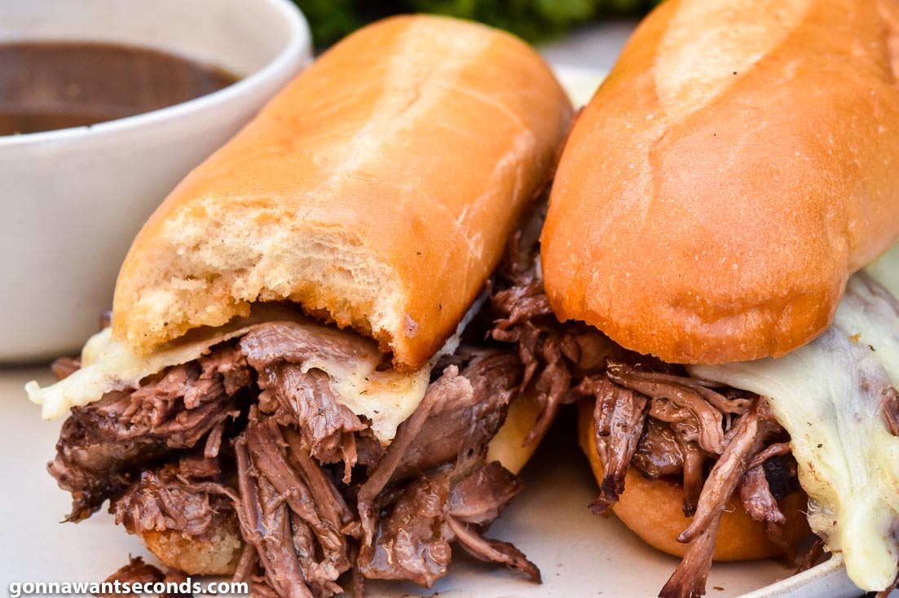

Home
French Dip Sandwiches
French Dip Sandwiches

Description
An amazing hot sandwich consisting of thinly sliced roast beef piled on a baguette-style roll or hoagie roll, with melted provolone or Swiss cheese.
Using a slow cooker to cook the meat to just-right tenderness, you too can serve a true French Dip to all of your friends and family during the cold winter nights! C'est si bon!
Ingredients
- 1 (4 pound) boneless beef roast
- ½ cup soy sauce
- 1 beef bouillon cube
- 1 bay leaf
- 3 whole black peppercorns
- 1 teaspoon dried rosemary, crushed
- 1 teaspoon dried thyme
- 1 teaspoon garlic powder
- 20 slices French bread
Steps
- Remove and discard all visible fat from the roast. Place trimmed roast in a slow cooker.
- In a medium bowl, combine soy sauce, bouillon, bay leaf, peppercorns, rosemary, thyme, and garlic powder. Pour mixture over roast, and add enough water to almost cover roast. Cover, and cook on Low heat for 10 to 12 hours, or until meat is very tender.
- Remove meat from broth, reserving broth. Shred meat with a fork, and distribute on bread for sandwiches. Used reserved broth for dipping.